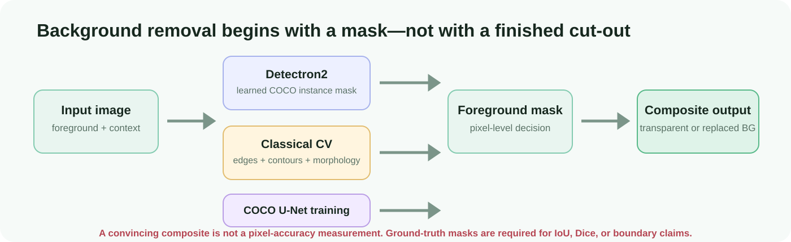
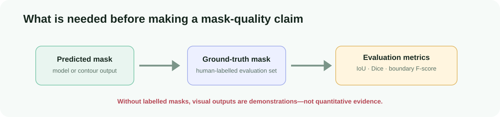

The actual problem: assign every pixel a role.
A finished image can hide a poor mask. The computer must decide whether each pixel belongs to the selected object or to the background before it can make a transparent PNG or insert a replacement background.

Three methods answer the same question differently.
| Method | How it obtains a mask | Where it helps | Typical failure |
|---|---|---|---|
| Detectron2 | COCO-pretrained instance model predicts objects and masks. | Everyday supported objects in complex scenes. | Unsupported class, wrong instance, occlusion, model/runtime dependency. |
| Classical CV | Grayscale, Canny edges, contour selection and morphology. | Teaching and controlled high-contrast images. | Clutter, weak edges, shadows, similar colours. |
| U-Net | Supervised pixel classifier trained on image/mask pairs. | Task-specific segmentation when labels and compute exist. | Data quality, generalisation, training cost. |
Classical path, step by step
colour image → grayscale → Canny edges → dilate/erode → contours → binary mask → composite
Every parameter is visible, which makes it a useful educational baseline. It has no semantic understanding of what the subject is: it simply follows image geometry.
Mask composition and cleanup
With binary mask M, original image I, and replacement background B, the conceptual operation is output = M × I + (1 − M) × B. For transparency, the same mask becomes the alpha channel.
What would prove quality?

Quantitative evaluation requires a held-out set with human-labelled masks and an explicit foreground definition. The project does not include that local evaluation set, so it does not claim an IoU, Dice score, boundary F-score, latency, or accuracy benchmark.
| Metric | Purpose |
|---|---|
| IoU / Jaccard | Measures whole-mask overlap. |
| Dice / F1 | Measures foreground similarity, useful for smaller objects. |
| Boundary F-score | Focuses on edge alignment, where cut-outs often fail visibly. |
Run responsibly
python -m venv .venv .venv\Scripts\Activate.ps1 pip install -r requirements.txt jupyter lab
The original notebooks are designed for Colab/Kaggle-style environments. Detectron2 must match the selected PyTorch/CUDA environment. The U-Net path requires authorised COCO images and annotations; the interactive path requires your own foreground/background image files.